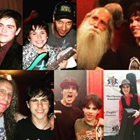
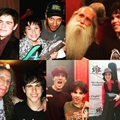

JoshuaHayesRocks.com
Featuring the music of Joshua Hayes - Singer Songwriter, Session Guitarist, Guitar Teacher
 

Directory
Bio
My name is Joshua Hayes. I am a singer-songwriter, session guitarist, and guitar teacher based out of LA and now Miami. After years of performing on both coasts solo and in bands, I decided to enroll at the University of Miami, where I am studying Music Business and Songwriting as well as Psychology. Relatively recently I wrote songs with trance artist Eric Lumiere that caught the attention of MTV’s Les Garland, blues guitarist Gary Clark Jr’s manager Scotter Weintraub, and soul singer Aloe Blacc, as well as a TV pilot. I just released my first EP which is available on practically any paid streaming platform imaginable, and I will be playing local shows to promote it, dates of which will be posted on this site.